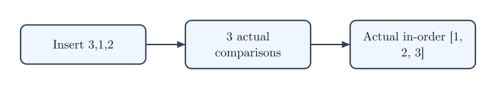
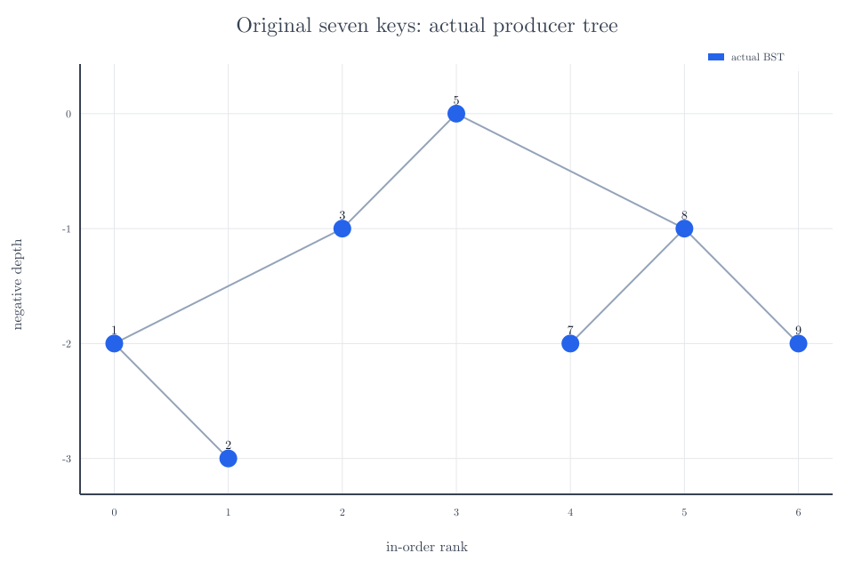
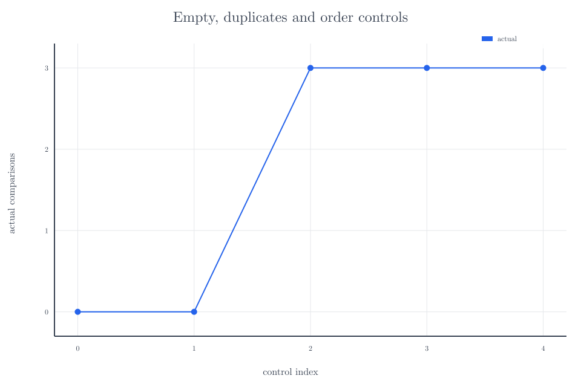
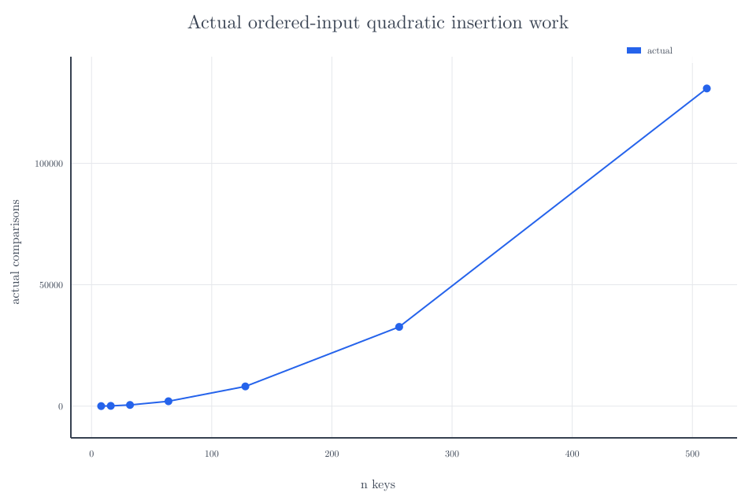

Tree sort: actual insertion paths and in-order emission
Abstract
Sorting integers through an unbalanced search tree is simple, but ordered inputs can make insertion quadratic. We inspect the actual tree and its traversal, then measure the executed comparisons.
The method
Each insertion follows left when the new key is smaller and right otherwise. By induction every left subtree precedes its root, which precedes its right subtree. In-order traversal therefore emits a nondecreasing sequence. Insertion comparisons equal the sum of inserted-node depths. Sorted distinct input gives n(n−1)/2 comparisons; the iterative traversal uses O(n) storage and avoids recursive stack exhaustion.
Simple worked example
#include <dm/dm.hpp>
int main() {
namespace a = dm::algorithms;
namespace g = dm::graphics;
std::filesystem::create_directories("build");
auto r = a::tree_sort_work({3, 1, 2});
std::print("| node | key | left | right | depth |\n|---:|---:|---:|---:|---:|\n");
for (std::size_t i = 0; i < r.values.size(); ++i)
std::print("|{}|{}|{}|{}|{}|\n", i, r.values[i], r.left[i], r.right[i],
r.depth[i]);
std::print("\nSorted `{}`; comparisons {}.\n", r.sorted, r.comparisons);
g::Diagram concept_diagram(48, 1100);
concept_diagram.node("n0", {0, 0}, "Insert 3,1,2");
concept_diagram.node("n1", {5, 0},
std::format("{} actual comparisons", r.comparisons));
concept_diagram.node("n2", {10, 0},
std::format("Actual in-order {}", r.sorted));
concept_diagram.edge("n0", "n1").edge("n1", "n2");
concept_diagram.save_svg("build/tree_sort_tiny.svg");
}| node | key | left | right | depth |
|---|---|---|---|---|
| 0 | 3 | 1 | -1 | 0 |
| 1 | 1 | -1 | 2 | 1 |
| 2 | 2 | -1 | -1 | 2 |
Sorted [1, 2, 3]; comparisons 3.

The retained original experiment
#include <dm/dm.hpp>
int main() {
namespace a = dm::algorithms;
namespace g = dm::graphics;
std::filesystem::create_directories("build");
auto r = a::tree_sort_work({5, 3, 8, 1, 9, 2, 7});
std::vector<double> x(r.values.size()), y;
for (std::size_t rank = 0; rank < r.inorder.size(); ++rank)
x[r.inorder[rank]] = rank;
for (auto d : r.depth)
y.push_back(-double(d));
auto p = g::RPlot::create();
for (std::size_t i = 0; i < r.values.size(); ++i) {
for (int c : {r.left[i], r.right[i]})
if (c >= 0)
p.line({x[i], x[c]}, {y[i], y[c]}, "", {148, 163, 184});
p.text(x[i], y[i] + .12, std::to_string(r.values[i]));
}
p.points(x, y, "actual BST", {37, 99, 235}, 10);
p.title("Original seven keys: actual producer tree").x_label("in-order rank").y_label("negative depth");
p.save_svg("build/tree_sort_original.svg");
std::print("Actual sorted keys `{}`; comparisons {}.\n", r.sorted,
r.comparisons);
}Actual sorted keys [1, 2, 3, 5, 7, 8, 9]; comparisons 11.

Checking the theory and controls
#include <dm/dm.hpp>
int main() {
namespace a = dm::algorithms;
namespace g = dm::graphics;
std::filesystem::create_directories("build");
std::vector<double> x, y;
std::print("| input | sorted | comparisons |\n|---|---|---:|\n");
int i = 0;
for (auto keys : std::vector<std::vector<int>>{{}, {4}, {2, 2, 2},
{3, 2, 1}, {1, 2, 3}}) {
auto r = a::tree_sort_work(keys);
std::print("|`{}`|`{}`|{}|\n", keys, r.sorted, r.comparisons);
x.push_back(i++);
y.push_back(r.comparisons);
}
auto p = g::RPlot::create();
p.line(x, y, "actual", {37, 99, 235}, 2);
p.points(x, y, "", {37, 99, 235}, 5);
p.title("Empty, duplicates and order controls").x_label("control index").y_label("actual comparisons");
p.save_svg("build/tree_sort_controls.svg");
}| input | sorted | comparisons |
|---|---|---|
[] | [] | 0 |
[4] | [4] | 0 |
[2, 2, 2] | [2, 2, 2] | 3 |
[3, 2, 1] | [1, 2, 3] | 3 |
[1, 2, 3] | [1, 2, 3] | 3 |

Sensitivity and selected work
#include <dm/dm.hpp>
int main() {
namespace a = dm::algorithms;
namespace g = dm::graphics;
std::filesystem::create_directories("build");
std::vector<double> x, y;
std::print("| n | actual comparisons | n(n-1)/2 |\n|---:|---:|---:|\n");
for (int n : {8, 16, 32, 64, 128, 256, 512}) {
std::vector<int> keys(n);
std::iota(keys.begin(), keys.end(), 0);
auto r = a::tree_sort_work(keys);
std::print("|{}|{}|{}|\n", n, r.comparisons, n * (n - 1) / 2);
x.push_back(n);
y.push_back(r.comparisons);
}
auto p = g::RPlot::create();
p.line(x, y, "actual", {37, 99, 235}, 2);
p.points(x, y, "", {37, 99, 235}, 5);
p.title("Actual ordered-input quadratic insertion work").x_label("n keys").y_label("actual comparisons");
p.save_svg("build/tree_sort_work.svg");
}| n | actual comparisons | n(n-1)/2 |
|---|---|---|
| 8 | 28 | 28 |
| 16 | 120 | 120 |
| 32 | 496 | 496 |
| 64 | 2016 | 2016 |
| 128 | 8128 | 8128 |
| 256 | 32640 | 32640 |
| 512 | 130816 | 130816 |

Interpretation and limits
Node arrays and in-order IDs come from the sorting kernel, rather than rebuilding a separate tree for the diagram. The default comparison cap makes pathological inputs explicit. This is an unbalanced integer sorter, not a production balanced-tree claim.
Every figure is saved locally by its complete editable program. No separate reconstruction supplies algorithm state. Counters describe the selected events, not elapsed time or peak memory.
References
Binary search tree invariant and sum-of-depth proof
Verified in the shared ten-document batch: 85 scoped native cases;21 directly
instrumented ASan/UBSan cases;36 executable public examples;63/63 definitions
across13 full scopes plus8 changed mixed-scope contracts;10 hovers;14393
independent records/67914 checks;frozen valid-input comparisons across all ten
families including bit-identical default Iris fits;11 checkout/installed
standalone headers and linked ten-family consumer;40 executed programs and40
inspected figures with both exports. Receipts:
build/mepml-conversion/batch-404-413/.